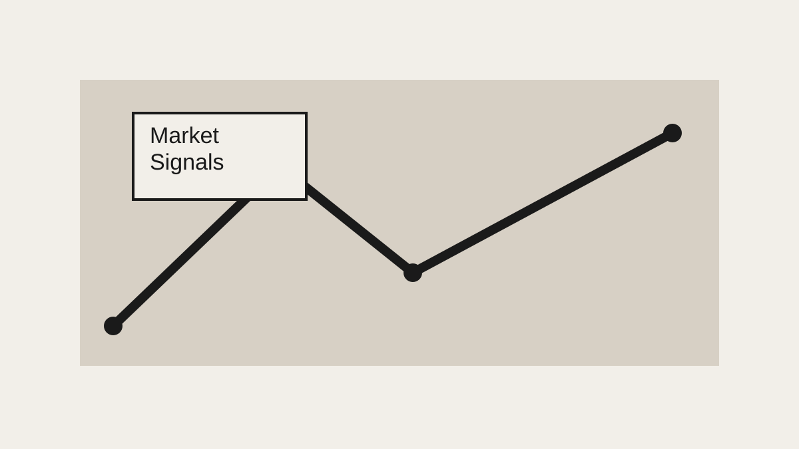
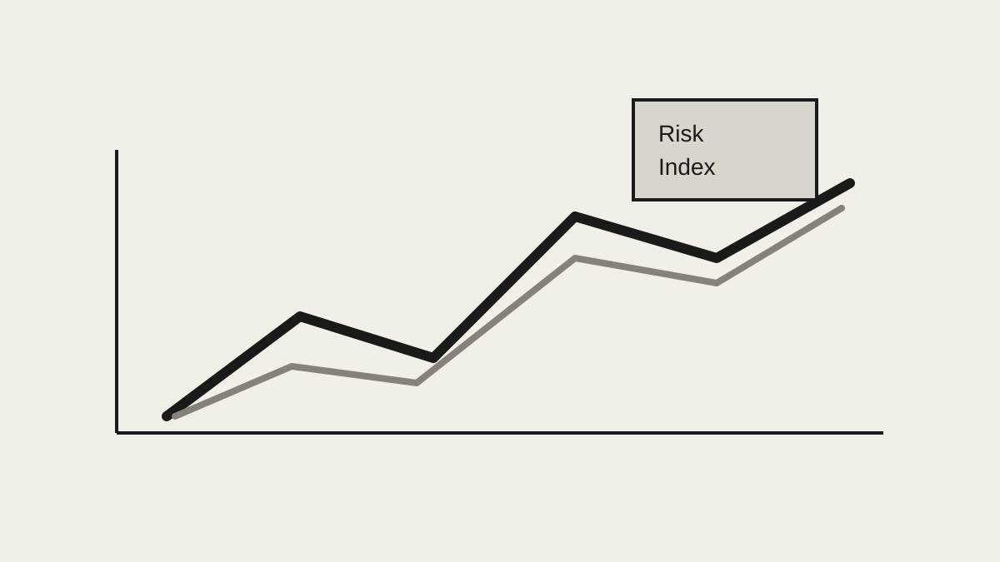

Tài chính số
Hiểu cách thanh toán kỹ thuật số, hợp tác fintech, nền tảng số và chính sách tài chính ảnh hưởng đến khả năng tiếp cận tín dụng và rủi ro hoạt động.
Hiểu cách thanh toán kỹ thuật số, hợp tác fintech, nền tảng số và chính sách tài chính ảnh hưởng đến khả năng tiếp cận tín dụng và rủi ro hoạt động.
Nghiên cứu tương tác giữa thước đo rủi ro, quy định và tính bền vững tài chính dài hạn trong hệ thống mới nổi.

Tín hiệu thị trường và mức độ rủi ro trong hệ thống tài chính hiện đại.

Quỹ đạo chính sách và chỉ số rủi ro hệ thống giữa các tổ chức.